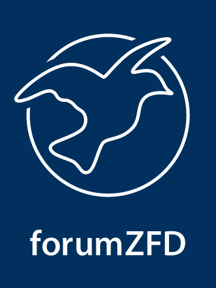
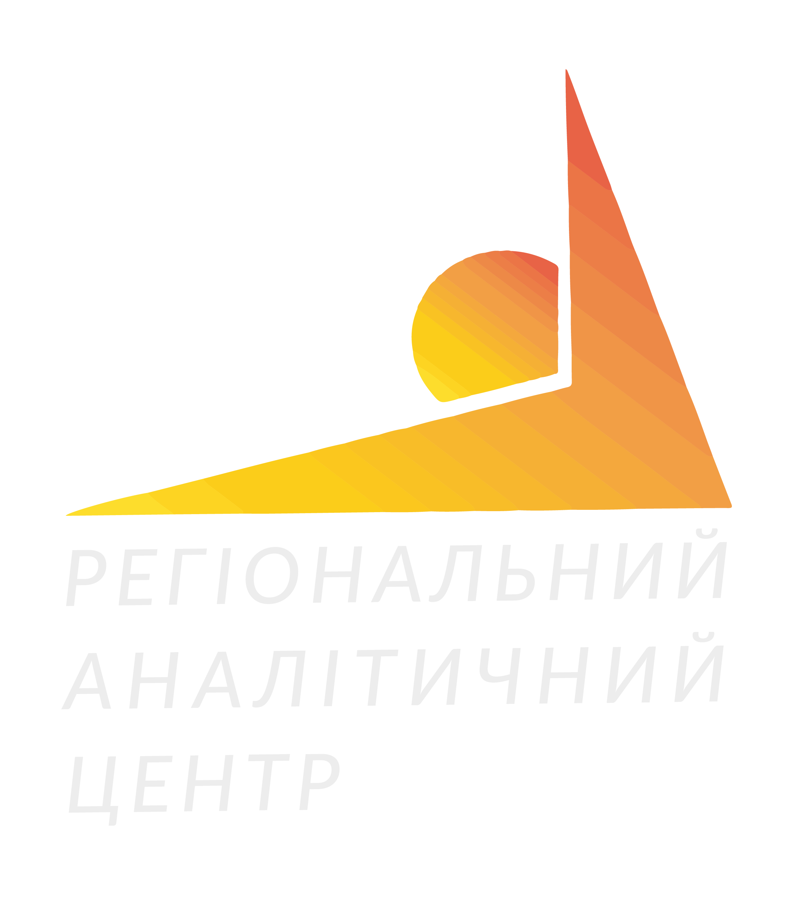

Рекомендуємо переглядати в широкій орієнтації. Переверніть екран.
Інтерактивна мапа соціальних конфліктів півдня Одеської області
[ проект в стадії розробки ]
Фільтр по типам конфлікту
гострий конфлікт
помірно гострий
негострий
Протягом трьох місяців ми проводили пілотний моніторінг конфліктів в регіоні і нанесли їх на карту.
Моніторинг охопив Ізмаїльський, Ренійський, Кілійський, Болградський і Татарбунарський райони Одеської області.
Клікніть на район на карті, щоб подивитись детальну інформацію по зафіксованим конфліктам.
Карта буде наповнюватись. Щоб повідомити про конфлікт, тисніть на відповідний лінк внизу карти і заповніть онлайн-форму.


Інтерактивна мапа розроблена в рамках проекту "Розробка пілотної моделі мапування соціальних конфліктів на прикладі п’яти районів півдня Одеської області" Громадською організацією "Регіональний аналітичний центр" спільно з Програмним офісом Форуму громадянської служби миру (forum ZFD) в Україні та за підтримки forum ZFD.